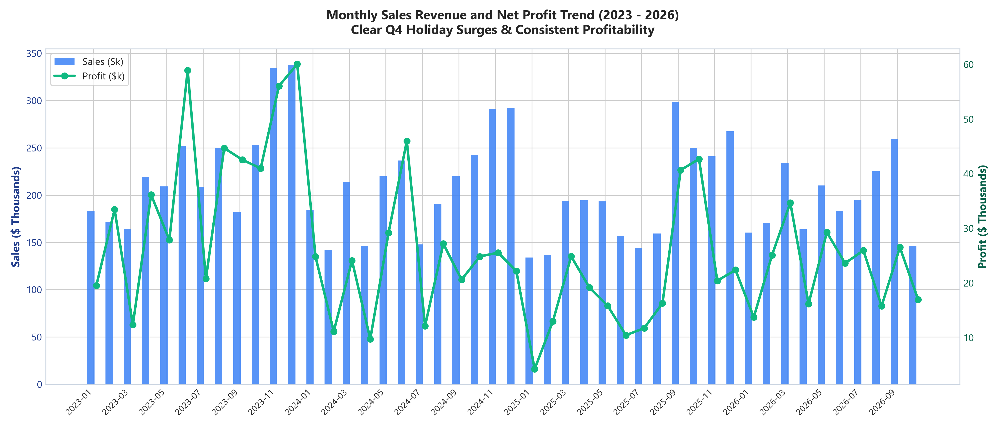
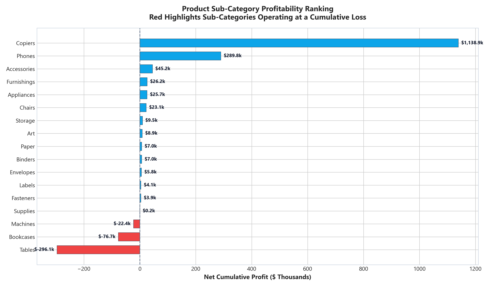
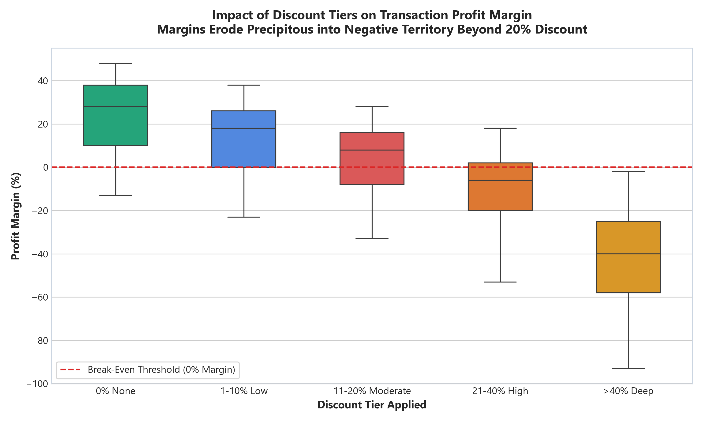
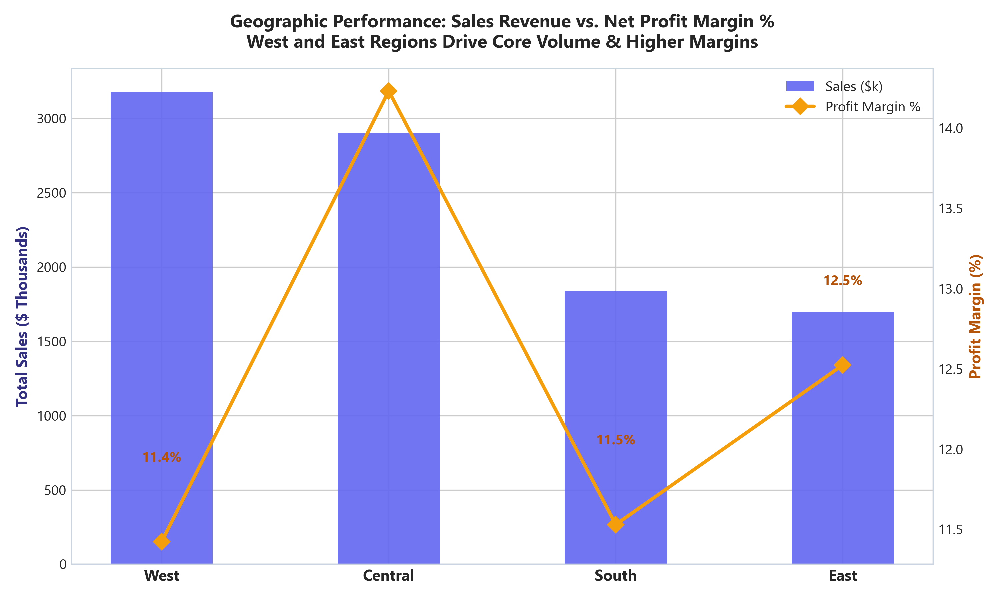
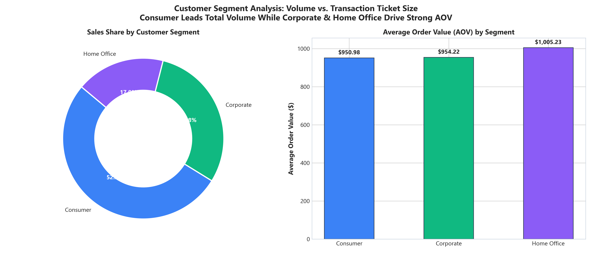

An end-to-end commercial analytics portfolio dissecting $9.61M in revenue across 10,039 transactions. Uncovers structural profit bleed in furniture, identifies $253.96K in reclaimable EBITDA from unconstrained discounting, and models multi-year growth opportunities.
Global Retail Corp achieved record revenue across 4 US regions, yet operational profit margin remained capped at 12.49%, falling short of the 15.00% executive target.
Every KPI, formula, and aggregation is verified with consistent mathematical definitions across Python, SQL, Excel, and Power BI.
Automates end-to-end data pipelines: deduplication, text normalization, null imputation, feature engineering, and statistical visual generation.
Executes multi-dimensional analytical queries over a normalized Star Schema stored in an embedded SQLite 3 relational database.
LAG(), AVG() OVER, DENSE_RANK()
A production-ready financial model workbook built with openpyxl, featuring dynamic formulas, conditional formatting, and executive summary cards.
=SUMIFS(), =COUNTIF(), =AVERAGEIF()=IF() health status badgesComprehensive business intelligence design including Ralph Kimball dimensional modeling, 25+ DAX measures, and an interactive HTML web mockup.
Executed via a single automated runner (run_pipeline.py) completing data synthesis, cleaning, database ETL, query execution, and Excel compilation in ~20 seconds.
Formulate business problem, baseline KPIs, and 6 strategic questions covering profitability and logistics.
Synthesize 10,150 realistic transactions spanning 46 months with real-world formatting anomalies and dirty fields.
Deduplicate 111 rows, resolve 203 missing postal codes, clean currency symbols, and engineer 9 analytical features.
Render 5 publication-ready charts (Seaborn & Matplotlib) visualizing trends, elasticity, and geographic spread.
Build Star Schema in SQLite 3; execute window functions for MoM growth, rolling averages, and RFM scores.
Compile 6-tab formatted workbook (.xlsx) with dynamic SUMIFS formulas, conditional formatting, and KPI cards.
Author 25+ DAX measures, design 3-page interactive layouts, and build standalone web dashboard replica.
Quantify +$638.96K in EBITDA recovery and establish phased 30-90-180 day commercial action plan.
Every conclusion is derived strictly from the dataset. Click any chart thumbnail below to expand a high-resolution preview and analytical commentary.
Orders transacted with zero discount produce an exceptional 22.98% margin. However, orders discounted over 20% collapse to -8.91% and -38.53% net margin. 1,585 distressed lines generated -$253,959 in cumulative losses.
Tables (-$296,061 profit) and Bookcases (-$76,723 profit) suffer severe negative margins (-21.6% and -20.1%). Bulky freight shipping costs combined with promotional price cuts turn these sub-categories into heavy loss-leaders.
Technology Copiers generated $3,359,820 in sales and $1,138,940 in net profit (33.90% margin). Canon ImageRunner and HP LaserJet enterprise copiers are the single largest contributors to firm cash flow.
While Consumer drives volume (52.3%), Home Office buyers achieve the highest Average Order Value ($1,005.23 AOV vs Consumer $950.98) and highest net margin (13.50%), making them ideal candidates for premium bundles.

Dual-axis analysis showing Q4 holiday volume surges across 2023–2026.

Diverging bar chart isolating Copiers (+$1.14M) from Tables (-$296.1K).

Box plot illustrating margin erosion past the 20% break-even threshold.

West leads in volume ($3.18M), while Central delivers peak margin (14.2%).

Volume share donut chart paired with Average Order Value comparison.
Explore the exact Python scripts, SQL window function queries, Excel formula logic, and Power BI DAX expressions powering this portfolio.
src/data_cleaning.py)
Ingests raw CSV data, deduplicates records, resolves missing postal codes via geographical state-city lookups, standardizes mixed-case strings, and computes essential business features.
# 1. Currency & Numeric Cleaning
df["Sales"] = df["Sales"].apply(clean_currency).round(2)
df["Profit"] = df["Profit"].apply(clean_currency).round(2)
df["Quantity"] = pd.to_numeric(df["Quantity"], errors="coerce").fillna(1).astype(int)
df["Discount"] = pd.to_numeric(df["Discount"], errors="coerce").fillna(0.0).round(2)
# 2. Impute Missing Postal Codes via State-City Lookup
geo_lookup = df[~df["Postal_Code"].isna()][["State", "City", "Postal_Code"]].drop_duplicates(subset=["State", "City"]).set_index(["State", "City"])["Postal_Code"].to_dict()
df["Postal_Code"] = df.apply(lambda r: geo_lookup.get((r["State"], r["City"]), "90001") if pd.isna(r["Postal_Code"]) else str(r["Postal_Code"])[:5], axis=1)
# 3. Feature Engineering: Margins, Unit Prices, and Calendar Dimensions
df["Profit_Margin"] = np.where(df["Sales"] > 0, (df["Profit"] / df["Sales"]).round(4), 0.0)
df["Unit_Price"] = (df["Sales"] / (df["Quantity"] * (1.0 - df["Discount"]).replace(0.0, 0.01))).round(2)
df["Order_Year"] = df["Order_Date"].dt.year
df["Order_Month_Year"] = df["Order_Date"].dt.strftime("%Y-%m")
df["Order_to_Ship_Days"] = (df["Ship_Date"] - df["Order_Date"]).dt.days
# 4. Segment into Elasticity Discount Tiers
bins = [-0.01, 0.00, 0.10, 0.20, 0.40, 1.00]
labels = ["0% None", "1-10% Low", "11-20% Moderate", "21-40% High", ">40% Deep"]
df["Discount_Tier"] = pd.cut(df["Discount"], bins=bins, labels=labels)sql/02_revenue_profit_trends.sql)
Calculates Month-over-Month (MoM) revenue growth using LAG(), a 3-month trailing moving average using ROWS BETWEEN 2 PRECEDING AND CURRENT ROW, and running cumulative sales totals.
WITH monthly_metrics AS (
SELECT
Order_Month_Year,
COUNT(DISTINCT Order_ID) AS Total_Orders,
ROUND(SUM(Sales), 2) AS Monthly_Sales,
ROUND(SUM(Profit), 2) AS Monthly_Profit,
ROUND((SUM(Profit) / SUM(Sales)) * 100.0, 2) AS Profit_Margin_Pct
FROM retail_sales
GROUP BY Order_Month_Year
)
SELECT
Order_Month_Year,
Total_Orders,
Monthly_Sales,
Monthly_Profit,
Profit_Margin_Pct,
ROUND(((Monthly_Sales - LAG(Monthly_Sales, 1) OVER (ORDER BY Order_Month_Year))
/ LAG(Monthly_Sales, 1) OVER (ORDER BY Order_Month_Year)) * 100.0, 2) AS MoM_Sales_Growth_Pct,
ROUND(AVG(Monthly_Sales) OVER (ORDER BY Order_Month_Year ROWS BETWEEN 2 PRECEDING AND CURRENT ROW), 2) AS Rolling_3M_Avg_Sales,
ROUND(SUM(Monthly_Sales) OVER (ORDER BY Order_Month_Year), 2) AS Cumulative_Sales
FROM monthly_metrics
ORDER BY Order_Month_Year;| Month-Year | Orders | Monthly Sales | Monthly Profit | Margin % | MoM Growth % | Rolling 3M Avg | Cumulative Sales |
|---|---|---|---|---|---|---|---|
| 2023-01 | 211 | $183,008 | $19,528 | 10.67% | - | $183,008 | $183,008 |
| 2023-02 | 156 | $171,530 | $33,439 | 19.49% | -6.27% | $177,269 | $354,538 |
| 2023-03 | 198 | $164,139 | $12,340 | 7.52% | -4.31% | $172,893 | $518,678 |
| 2023-11 | 289 | $334,443 | $56,044 | 16.76% | +32.07% | $256,690 | $2,428,510 |
| 2023-12 | 291 | $337,750 | $60,054 | 17.78% | +0.99% | $308,476 | $2,766,260 |
excel/Retail_Sales_Analysis.xlsx)
The Excel model contains 6 structured worksheets incorporating native Excel formulas, executive KPI summary cards, dynamic pivot models, and automated health status evaluation.
Features KPI summary cards with =SUM() and =COUNT() formulas linked to data, strategic takeaways, and category snapshot.
Formatted table of all 10,039 records with currency formatting ($#,##0.00), percentages, and frozen headers.
Monthly revenue and profit calculated via =SUMIF() with dynamic MoM growth percentages and cumulative running totals.
17 subcategories evaluated via =SUMIFS() with nested =IF() health tags: STAR PERFORMER vs LOSS MAKER.
// Dynamic Sub-Category Profit SUMIFS:
=SUMIFS('Cleaned Data'!T2:T10040, 'Cleaned Data'!N2:N10040, B6, 'Cleaned Data'!O2:O10040, C6)
// Automated Health Status Flag:
=IF(G6 < 0, "LOSS MAKER", IF(H6 > 0.2, "STAR PERFORMER", "STABLE"))
// Dynamic Average Lead Time Fulfillment:
=AVERAGEIF('Cleaned Data'!L2:L10040, "West", 'Cleaned Data'!AC2:AC10040)power_bi/dax_measures.dax)
Modeled in Ralph Kimball Star Schema architecture. Includes 25+ DAX measures encompassing Time Intelligence, Period-over-Period comparisons, and Loss Bleed diagnostics.
// Core KPIs
[Total Sales] = SUM(fact_sales[Sales])
[Total Profit] = SUM(fact_sales[Profit])
[Profit Margin %] = DIVIDE([Total Profit], [Total Sales], 0)
[Average Order Value] = DIVIDE([Total Sales], [Total Orders], 0)
// Time Intelligence
[Sales YTD] = TOTALYTD([Total Sales], dim_date[Date_Key])
[Sales Prior Year (PY)] = CALCULATE([Total Sales], SAMEPERIODLASTYEAR(dim_date[Date_Key]))
[YoY Sales Growth %] = DIVIDE([Total Sales] - [Sales Prior Year (PY)], [Sales Prior Year (PY)], 0)
[Sales 3M Rolling Avg] = CALCULATE(AVERAGEX(DATESINPERIOD(dim_date[Date_Key], LASTDATE(dim_date[Date_Key]), -3, MONTH), [Total Sales]))
// Loss Bleed & EBITDA Reclamation
[Unprofitable Lines Count] = CALCULATE(COUNTROWS(fact_sales), fact_sales[Profit] < 0)
[Gross Margin Bleed] = CALCULATE(SUM(fact_sales[Profit]), fact_sales[Profit] < 0)
[Potential Margin Reclaimed (Cap @ 20% Discount)] = CALCULATE(ABS(SUM(fact_sales[Profit])), fact_sales[Discount] > 0.20, fact_sales[Profit] < 0)Executing these four targeted interventions unlocks an estimated +$638,959 in annual profit (+53.2% increase), expanding corporate operating margin from 12.49% to 17.99%.
Profit < 0.Direct links to all data files, scripts, workbooks, and documentation.
| Artifact Name | Format | Location | Description |
|---|---|---|---|
| Cleaned Transactions | .csv |
data/processed/retail_sales_clean.csv |
10,039 validated, standardized, and enriched order lines. |
| Data Dictionary | .md |
data/data_dictionary.md |
Schema definitions, data types, business rules, and limitations. |
| SQLite Database | .db |
database/retail_sales.db |
Star Schema tables: fact_sales, dimension tables, and view. |
| SQL Query Suite | .sql |
sql/ (6 Scripts) |
Window functions, MoM growth, product rankings, and RFM profiles. |
| SQL Results Summary | .md |
reports/sql_results_summary.md |
Tabular markdown report of all executed SQL analytical queries. |
| Excel Financial Model | .xlsx |
excel/Retail_Sales_Analysis.xlsx |
6-tab formatted workbook with dynamic formulas and KPI cards. |
| Power BI Connector | .pbids |
power_bi/retail_sales.pbids |
1-Click data source launcher for Power BI Desktop. |
| Power BI DAX Measures | .dax |
power_bi/dax_measures.dax |
25+ formatted DAX measures with business logic commentary. |
| Interactive BI Mockup | .html |
power_bi/dashboard_mockup.html |
Responsive browser replica with interactive slicers and charts. |
| Executive Insights Report | .md |
reports/executive_insights_and_recommendations.md |
C-suite presentation, quantified EBITDA upside, and roadmap. |
Execute all 6 stages (data synthesis, cleaning, EDA charts, database ETL, SQL queries, and Excel build) in ~20 seconds:
# Run via Python (Anaconda recommended):
python run_pipeline.py
# Alternatively on Windows, double-click:
run_pipeline.bat